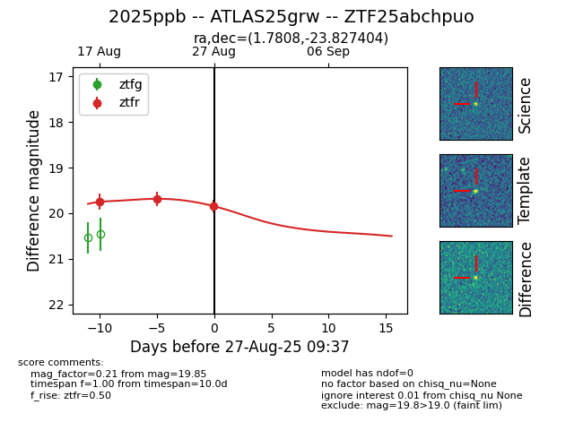

Target 2025ppb at 2025-08-27 09:37, see:
FINK: fink-portal.org/ZTF25abchpuo
Lasair: lasair-ztf.lsst.ac.uk/objects/ZTF25abchpuo
ALeRCE: alerce.online/object/ZTF25abchpuo
TNS: wis-tns.org/object/2025ppb
YSE: ziggy.ucolick.org/yse/transient_detail/2025ppb
alt names
ZTF25abchpuo (ztf,fink)
2025ppb (tns,yse)
ATLAS25grw (atlas)
coordinates:
equatorial (ra, dec) = (1.7808,-23.82740)
galactic (l, b) = (48.7516,-79.47302)
photometry
last ztfr=19.85
3 ztfr detections
